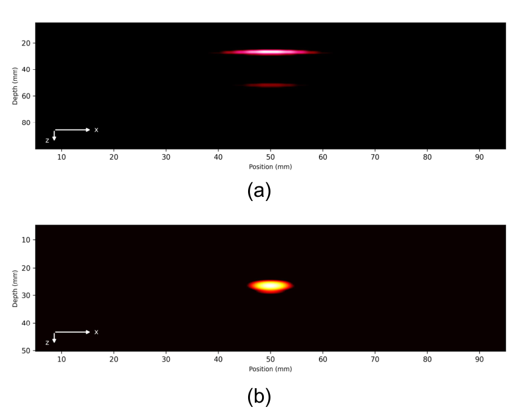
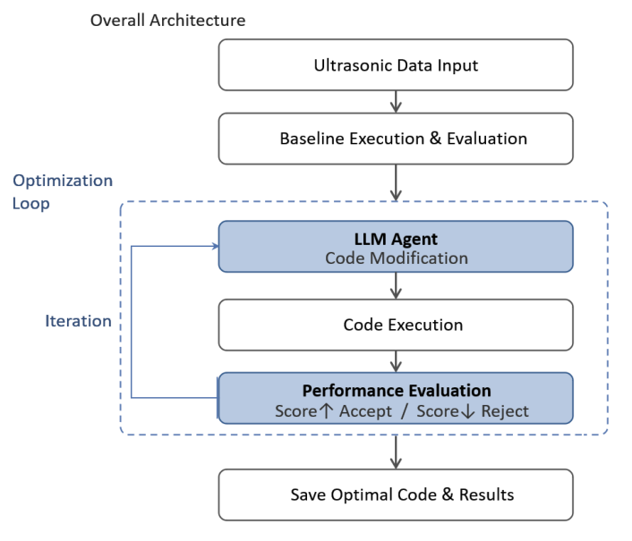

Juhyeok Park 박주혁
Education 학력
B.S. Electronic Engineering, Chungbuk National University — GPA 3.80 / 4.5 (major 3.84) · expected Feb 2027
Publications & talks 논문·발표
Juhyeok Park, Hogeon Seo. "An LLM Wiki System for High-Consequence Domain Knowledge Organization: Initial Feasibility for Space Operations and Nuclear Engineering." 3rd IAA Conference on AI for Space, Jeju, Korea, Aug 2026. First author · oral · manuscript · slides
Juhyeok Park, Hogeon Seo. "A VLM Robot Manipulation Pipeline for Mitigating Physical Hallucination" (in Korean). Korea Society of Industrial Information Systems, Spring 2026. First author · proceedings + oral · slides
D. Choi, J. Park, H. Seo. "Development of an AI Agent Framework for Autonomous Improvement of an Ultrasonic Imaging Algorithm." Journal of the Korean Society for Nondestructive Testing, 46(4):268–277, 2026 (KCI). doi · Co-author · benchmark task design and code documentation.


Patent pending, co-inventor — direction control in LLM embedding space with a human-in-the-loop. Korean application, 2026.
Experience 경력
KAERI research intern, 6 months, 2026 · NAVIS Lab undergraduate researcher, 2025.12 – 2026.02
Coursework implementations 교과 구현
- Raspberry Pi real-time vision and voice integration.
- Cortex-M3 secure OTP.
- PPM modulation/demodulation with hard and soft decisions (MATLAB).
- AES-128/CBC from scratch.
Skills 기술
Python (main), C/C++, MATLAB · PyTorch, YOLOv8/Ultralytics, DINOv2, knowledge distillation · DSP, FFT, coherent accumulation, TOA · ARM Cortex-M3, Raspberry Pi, USART, TCP/IP